7. إدارة الوصول المتزامن إلى البيانات
حتى الآن، استخدمنا جداول كنا نحن المستخدمين الوحيدين لها. في الواقع، على جهاز متعدد المستخدمين، غالبًا ما يتم مشاركة البيانات بين مستخدمين مختلفين. وهذا يطرح السؤال التالي: من يمكنه استخدام جدول معين وبأي صفة (استعلام، إدراج، حذف، إضافة، ...)؟
7.1. إنشاء مستخدمي Firebird
عندما عملنا مع IB-Expert، قمنا بتسجيل الدخول كمستخدم SYSDBA. يمكن العثور على هذه المعلومات في خصائص الاتصال المفتوح بنظام إدارة قواعد البيانات:
 |  |
على اليمين، نرى أن المستخدم الذي قام بتسجيل الدخول هو [SYSDBA]. ما لا نراه هو كلمة المرور الخاصة به [masterkey]. [SYSDBA] هو مستخدم Firebird خاص: يتمتع بامتيازات كاملة على جميع الكائنات التي يديرها نظام إدارة قواعد البيانات. يمكنك إنشاء مستخدمين جدد في IBExpert باستخدام خيار [Tools / User Manager] أو الرمز التالي:

يؤدي هذا إلى فتح نافذة إدارة المستخدمين:

يتيح لك زر [Add] إنشاء مستخدمين جدد:
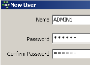
لنقم بإنشاء المستخدمين التاليين:
اسم المستخدم | كلمة المرور |
ADMIN1 | admin1 |
ADMIN2 | admin2 |
SELECT1 | select1 |
SELECT2 | select2 |
تحديث1 | تحديث1 |
تحديث 2 | التحديث 2 |
7.2. منح حقوق الوصول للمستخدمين
تنتمي قاعدة البيانات إلى المستخدم الذي أنشأها. كانت قواعد البيانات التي أنشأناها حتى الآن مملوكة للمستخدم [SYSDBA]. لتوضيح مفهوم الأذونات، دعونا ننشئ (Database / Create Database) قاعدة بيانات جديدة تحت الهوية [ADMIN1, admin1]:

ونقوم بتسجيلها بالاسم المستعار DBACCES (ADMIN1). يتيح لك استخدام الأسماء المستعارة فتح اتصالات بنفس قاعدة البيانات باستخدام أسماء مستخدمين مختلفة، مما يسهل التعرف عليها في مستكشف قواعد البيانات IBExpert. :
 |  |
الآن دعونا ننشئ الجدولين التاليين، TA و TB:
الجدول TA
 |
الجدول TB
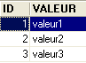 |
هذه الجداول غير مرتبطة ببعضها البعض.
باستخدام IB-Expert، لنقم بإنشاء اتصال ثانٍ بقاعدة البيانات [DBACCES]، هذه المرة تحت اسم [ADMIN2 / admin2]. للقيام بذلك، سنستخدم خيار [Database / Register Database]:
 |  |
حدد DBACCES(ADMIN2) وافتح محرر SQL (Shift + F12):
 |
ستتاح لنا الفرصة لاستخدام اتصالات متنوعة بنفس قاعدة البيانات [DBACCES]. وسيكون لدينا محرر SQL لكل منها. في [1]، يعرض محرر SQL الاسم المستعار لقاعدة البيانات المتصلة. استخدم هذه المعلومات لتحديد محرر SQL الذي تستخدمه. وهذا أمر مهم لأننا سننشئ اتصالات لا تتمتع بنفس حقوق الوصول إلى كائنات قاعدة البيانات.
دعونا نستعلم عن محتويات جدول TA:

نتلقى رسالة الخطأ التالية:

ماذا يعني هذا؟ تم إنشاء قاعدة البيانات [DBACCESS] بواسطة المستخدم [ADMIN1]، وبالتالي فهي مملوكة له. وهو وحده من لديه حق الوصول إلى الكائنات المختلفة في قاعدة البيانات هذه. ويمكنه منح حقوق الوصول لمستخدمين آخرين باستخدام الأمر SQL GRANT. ولهذا الأمر صيغ مختلفة. وإحدى هذه الصيغ هي كما يلي:
GRANT privilege1, privilege2, ...| ALL PRIVILEGES ON table/view لـ user1, user2, ...| PUBLIC [ مع خيار المنح ] | |
يمنح امتيازات وصول محددة أو جميع الامتيازات (ALL PRIVILEGES) على الجدول أو العرض لمستخدم معين أو لجميع المستخدمين (PUBLIC). تسمح جملة WITH GRANT OPTION للمستخدمين الذين تم منحهم امتيازات بمنحها بدورهم لمستخدمين آخرين. |
من بين الامتيازات التي يمكن منحها ما يلي:
الحق في استخدام الأمر DELETE على الجدول أو طريقة العرض. | |
الحق في استخدام الأمر INSERT على الجدول أو طريقة العرض | |
إذن استخدام الأمر SELECT على الجدول أو العرض | |
إذن استخدام الأمر UPDATE على الجدول أو العرض. يمكن تقييد هذا الإذن على أعمدة معينة باستخدام الصيغة: GRANT update (col1, col2, ...) ON table/view TO user1, user2, ...| PUBLIC [WITH GRANT OPTION] |
لنمنح المستخدم [ADMIN2] إذن SELECT على الجدول TA. لا يمكن منح هذا الإذن إلا لمالك الجدول، أي [ADMIN1] في هذه الحالة. انتقل إلى اتصال DBACCES(ADMIN1) وافتح محرر SQL جديد (Shift+F12):

من الآن فصاعدًا، سننتقل بين محرري SQL. للتنقل بينهما، يمكنك استخدام خيار القائمة [Windows]:

في الأعلى، نرى محرري SQL، كل منهما مرتبط بمستخدم معين. لنعد إلى محرر SQL (ADMIN1) وندخل الأمر التالي:

ثم قم بتأكيده باستخدام COMMIT:
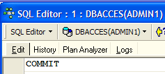
الآن، دعونا ننتقل إلى محرر المستخدم ADMIN2 لإعادة تشغيل عبارة SELECT التي فشلت:
نحصل على رسالة الخطأ التالية:
لا يزال المستخدم [ADMIN2] لا يملك الإذن لعرض الجدول [TA]. في الواقع، يبدو أن أذونات المستخدم يتم تحميلها عند تسجيل الدخول. وبالتالي، لا يزال [ADMIN2] يتمتع بنفس الأذونات التي كان يتمتع بها عند تسجيل الدخول لأول مرة، أي لا شيء. دعونا نتحقق من ذلك. قم بتسجيل خروج المستخدم [ADMIN2]:
- حدد اتصاله
- اطلب تسجيل الخروج بالنقر بزر الماوس الأيمن على الاتصال واختيار خيار [Disconnect from database] أو (Shift + Ctrl + D)
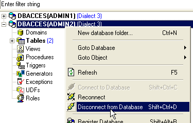
إذا ظهرت نافذة حوار تطلب [COMMIT]، فقم بتنفيذ [COMMIT]. ثم أعد توصيل المستخدم [ADMIN2] عن طريق اختيار خيار [Reconnect] أعلاه. بمجرد الانتهاء من ذلك، عد إلى محرر SQL (ADMIN2) وأعد تشغيل استعلام SELECT الذي فشل:
ثم نحصل على النتيجة التالية:
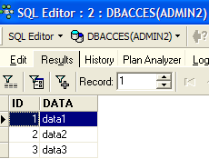
هذه المرة، يمكن لـ ADMIN2 عرض جدول TA بفضل امتياز SELECT الممنوح من قبل مالكه، ADMIN1. عادةً، هذا هو الامتياز الوحيد الذي يمتلكونه. دعونا نتحقق من ذلك. ما زلنا في محرر SQL (ADMIN2):
 |  |
تُظهر الشاشة على اليمين أن ADMIN2 لا يمتلك إذن DELETE على جدول TA.
لنعد إلى محرر SQL (ADMIN1) لمنح حقوق إضافية للمستخدم ADMIN2. نقوم بتنفيذ الأمرين التاليين على التوالي:
 |  |
- يمنح الأمر الأول المستخدم ADMIN2 حقوق وصول كاملة إلى الجدول [TA]، إلى جانب القدرة على منح حقوق للآخرين (WITH GRANT OPTION)
- الأمر الثاني يصادق على الأمر السابق
بمجرد الانتهاء من ذلك، وكما فعلنا من قبل، دعونا نُجدد اتصال المستخدم [ADMIN2] (قطع الاتصال / إعادة الاتصال)، ثم في محرر SQL (ADMIN2) أدخل الأوامر التالية:
 |  |  |
تمكن ADMIN2 من حذف جميع الصفوف من جدول TA. دعونا نلغي هذا الحذف باستخدام ROLLBACK:
 | |  |
دعونا نتحقق من أن ADMIN2 يمكنه بدوره منح أذونات على جدول TA.
 |  |
الآن، لنفتح اتصالاً بقاعدة البيانات [DBACCES] (قاعدة البيانات / تسجيل قاعدة البيانات) تحت اسم [SELECT1 / select1]، وهو أحد المستخدمين الذين تم إنشاؤهم سابقاً، ثم نضغط مرتين على الرابط الذي تم إنشاؤه في [مستكشف قاعدة البيانات]:
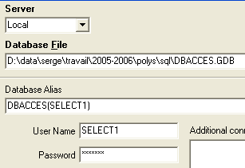 |  |
انتقل إلى هذا الاتصال الجديد وافتح محرر SQL جديد (Shift + F12) لإدخال الأوامر التالية:
 | 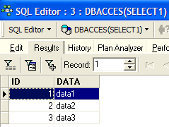 |
يتمتع المستخدم SELECT1 بالفعل بحقوق SELECT على جدول TA. هل يمكنه نقل هذا الحق إلى المستخدم SELECT2؟
 |
فشلت العملية لأن المستخدم SELECT1 لم يحصل على حق منح امتياز SELECT الذي حصل عليه من المستخدم ADMIN2. لكي يحدث ذلك، كان على المستخدم ADMIN2 استخدام جملة WITH GRANT OPTION في عبارة SQL GRANT الخاصة به. قواعد منح الامتيازات بسيطة:
- لا يمكن للمستخدم منح سوى الامتيازات التي حصل عليها ولا شيء أكثر من ذلك
- ولا يمكنه نقلها إلا إذا حصل عليها مع امتياز [WITH GRANT OPTION]
يمكن إلغاء امتياز مُمنوح باستخدام عبارة REVOKE:
REVOKE امتياز1، امتياز2، ...| ALL PRIVILEGES ON table/view من user1، user2، ...| عام | |
يلغي امتيازات الوصول (privilege1) أو جميع الامتيازات (ALL PRIVILEGES) على الجدول أو العرض من المستخدمين (user1، user2، ...) أو جميع المستخدمين (PUBLIC). |
دعونا نجرب ذلك. عد إلى محرر SQL ADMIN2 لإزالة امتياز SELECT الذي منحناه للمستخدم SELECT1:
 |  |
دعونا نقطع اتصال جلسة عمل المستخدم SELECT1 ثم نعيد الاتصال بها. بعد ذلك، في محرر SQL (SELECT1)، دعونا نستعلم عن محتويات جدول TA:
 |  |
لقد فقد المستخدم SELECT1 بالفعل امتياز SELECT الخاص به على جدول TA. لاحظ أن ADMIN2 هو من منح هذا الامتياز، وأن ADMIN2 هو من ألغاه. إذا حاول ADMIN1 إلغاءه، فلن يتم الإبلاغ عن أي خطأ، ولكن يمكننا أن نرى بعد ذلك أن SELECT1 قد احتفظ بامتياز SELECT الخاص به.
يمكن منح امتياز للجميع باستخدام الصيغة: GRANT privilege(s) ON table / view TO PUBLIC. دعونا نمنح امتياز SELECT على جدول TA للجميع. يمكننا استخدام ADMIN1 أو ADMIN2 للقيام بذلك. سنستخدم ADMIN2:
 |  |
لنقم بإنشاء اتصال بقاعدة البيانات باستخدام المستخدم USER1 / user1:
 |  |
باستخدام اتصال DBACCES(USER1)، افتح محرر SQL جديد (Shift + F12) وأدخل الأوامر التالية:
 |  |
يتمتع المستخدم USER1 بالفعل بإذن SELECT على جدول TA.
7.3. المعاملات
7.3.1. مستويات العزل
سننتقل الآن من مسألة حقوق الوصول إلى كائنات قاعدة البيانات إلى مسألة الوصول المتزامن إلى هذه الكائنات. يريد مستخدمان يتمتعان بحقوق وصول كافية إلى كائن قاعدة بيانات — جدول، على سبيل المثال — استخدامه في نفس الوقت. ماذا يحدث؟
يعمل كل مستخدم ضمن معاملة. المعاملة هي سلسلة من عبارات SQL التي يتم تنفيذها "بشكل متكامل":
- إما أن تنجح جميع العمليات
- أو تفشل إحداها، وفي هذه الحالة يتم التراجع عن جميع العمليات السابقة
في النهاية، يتم تطبيق جميع العمليات في المعاملة بنجاح أو لا يتم تطبيق أي منها. عندما يكون للمستخدم السيطرة على المعاملة (كما هو الحال في هذا المستند)، فإنه يلتزم بالمعاملة باستخدام عبارة COMMIT أو يلغيها باستخدام عبارة ROLLBACK.
يعمل كل مستخدم ضمن معاملة تخصه. عادةً ما توجد أربعة مستويات من العزل بين المستخدمين المختلفين:
- قراءة غير ملتزم بها
- قراءة ملتزم بها
- قراءة قابلة للتكرار
- قابل للتسلسل
قراءة غير ملتزم بها
يُعرف مستوى العزل هذا أيضًا باسم "القراءة غير النظيفة". فيما يلي مثال على ما يمكن أن يحدث في هذا الوضع:
- يبدأ المستخدم U1 معاملة على الجدول T
- يبدأ المستخدم U2 معاملة على نفس الجدول T
- يقوم المستخدم U1 بتعديل الصفوف في الجدول T ولكنه لم يقم بتثبيتها بعد
- المستخدم U2 "يرى" هذه التغييرات ويتخذ قرارات بناءً على ما يراه
- يقوم المستخدم بإلغاء معاملته باستخدام ROLLBACK
يمكننا أن نرى أنه في الخطوة 4، اتخذ المستخدم U2 قرارًا بناءً على بيانات تبين لاحقًا أنها غير صحيحة.
القراءة الملتزم بها
يتجنب مستوى العزل هذا المأزق السابق. في هذا الوضع، لن "يرى" المستخدم U2 في الخطوة 4 التغييرات التي أجراها المستخدم U1 على الجدول T. لن يراها إلا بعد أن يقوم U1 بتثبيت معاملته.
في هذا الوضع، المعروف أيضًا باسم "القراءة غير القابلة للتكرار"، قد تحدث الحالات التالية:
- يبدأ المستخدم U1 معاملة على الجدول T
- يبدأ المستخدم U2 معاملة على نفس الجدول T
- يقوم المستخدم U2 بتنفيذ أمر SELECT للحصول على متوسط العمود C من صفوف T التي تستوفي شرطًا معينًا
- يقوم المستخدم U1 بتعديل (UPDATE) قيم معينة في العمود C من T ويلتزم (COMMIT) بالتغييرات
- يكرر المستخدم U2 نفس أمر SELECT كما في الخطوة 3. سيجد أن متوسط العمود C قد تغير بسبب التعديلات التي أجراها U1.
الآن، لا يرى المستخدم U2 سوى التغييرات التي «تم تثبيتها» بواسطة U1. ولكن في ظل البقاء ضمن نفس المعاملة، تؤدي عمليتان متطابقتان (الخطوتان 3 و5) إلى نتائج مختلفة. ويشير مصطلح «القراءة غير القابلة للتكرار» إلى هذه الحالة. وهذه الحالة تمثل مشكلة لمن يرغب في الحصول على عرض متسق للجدول T.
القراءة القابلة للتكرار
في مستوى العزل هذا، يُضمن للمستخدم الحصول على نفس النتائج من قراءات قاعدة البيانات طالما بقي ضمن نفس المعاملة. يعمل المستخدم على لقطة لا تعكس أبدًا التغييرات التي أجرتها معاملات أخرى، حتى لو تم تثبيت تلك التغييرات. لن يرى المستخدم تلك التغييرات إلا بعد أن ينهي المعاملة بنفسه باستخدام COMMIT أو ROLLBACK.
ومع ذلك، فإن مستوى العزل هذا ليس مثاليًا بعد. بعد العملية 3 أعلاه، يتم قفل الصفوف التي استعلم عنها المستخدم U2. أثناء العملية 4، لن يتمكن المستخدم U1 من تعديل (UPDATE) القيم الموجودة في العمود C من هذه الصفوف. ومع ذلك، يمكنه إضافة صفوف جديدة (INSERT). إذا كانت بعض الصفوف المضافة تستوفي الشرط الذي تم اختباره في 3، فستسفر العملية 5 عن متوسط مختلف عن المتوسط الموجود في 3 بسبب الصفوف المضافة.
لحل هذه المشكلة الجديدة، يجب التبديل إلى عزل "Serializable".
Serializable
في وضع العزل هذا، تكون المعاملات معزولة تمامًا عن بعضها البعض. ويضمن ذلك أن تكون نتيجة معاملتين يتم تنفيذهما في وقت واحد هي نفسها كما لو تم تنفيذهما واحدة تلو الأخرى. لتحقيق هذه النتيجة، أثناء العملية 4، عندما يحاول المستخدم U1 إضافة صفوف من شأنها تغيير نتيجة SELECT الخاصة بالمستخدم U1، سيتم منعه من القيام بذلك. ستظهر رسالة خطأ لإعلامه بأن الإدراج غير ممكن. وسيصبح ذلك ممكنًا بمجرد قيام المستخدم U2 بتثبيت معاملته.
مستويات عزل معاملات SQL الأربعة غير متوفرة في جميع أنظمة إدارة قواعد البيانات. يوفر Firebird مستويات العزل التالية:
- snapshot: وضع العزل الافتراضي. يتوافق مع وضع "Repeatable Read" في معيار SQL.
- committed read: يتوافق مع وضع "committed read" في معيار SQL
يتم تعيين مستوى العزل هذا بواسطة الأمر SET TRANSACTION:
SET TRANSACTION [READ WRITE | READ ONLY] [WAIT|NOWAIT] مستوى العزل [لقطة | قراءة ملتزم] | |
الكلمات الرئيسية التي تحتها خط هي القيم الافتراضية READ WRITE: يمكن للمعاملة القراءة والكتابة قراءة فقط: يمكن للمعاملة القراءة فقط WAIT: في حالة حدوث تعارض بين معاملتين، تنتظر المعاملة التي لم تتمكن من إكمال عمليتها حتى يتم تنفيذ المعاملة الأخرى. ولا يمكنها إصدار عبارات SQL بعد ذلك. NOWAIT: لا يتم حظر المعاملة التي لم تتمكن من إكمال عمليتها. تتلقى رسالة خطأ ويمكنها مواصلة العمل. مستوى العزل [SNAPSHOT | READ COMMITTED]: مستوى العزل |
دعونا نجرب ذلك. في محرر SQL (ADMIN1)، أدخل الأمر SQL التالي:

نرى أنه لم يتم التصريح به. لا نعرف السبب...
يتيح لك IB-Expert ضبط وضع العزل بطريقة أخرى. انقر بزر الماوس الأيمن على اتصال DBACCES(ADMIN1) لاختيار خيار [معلومات تسجيل قاعدة البيانات]:
 |  |
تظهر الشاشة على اليمين خيار [Transactions]. سيسمح لنا هذا بتعيين مستوى عزل المعاملات. هنا، نقوم بتعيينه على [snapshot]. نقوم بنفس الشيء مع اتصال DBACCES(ADMIN2).
7.3.2. وضع اللقطة
دعونا نفحص مستوى عزل اللقطة، وهو وضع العزل الافتراضي في Firebird. عندما يبدأ المستخدم معاملة، يتم التقاط لقطة من قاعدة البيانات. ثم يعمل المستخدم على هذه اللقطة. وبالتالي، يعمل كل مستخدم على لقطة خاصة به من قاعدة البيانات. إذا أجرى المستخدم تغييرات عليها، فلن يراها المستخدمون الآخرون. لن يراها المستخدمون الآخرون إلا بعد أن يقوم المستخدم الذي أجرى التغييرات بتثبيتها باستخدام الأمر COMMIT.
هناك سيناريوهان محتملان:
- يقوم أحد المستخدمين بقراءة الجدول (SELECT) بينما يقوم مستخدم آخر بتعديله (INSERT، UPDATE، DELETE)
- يرغب كلا المستخدمين في تعديل الجدول في نفس الوقت
7.3.2.1. مبدأ القراءة المتسقة
لنفترض أن هناك مستخدمين، U1 و U2، يعملان على نفس الجدول TAB:
تبدأ معاملة المستخدم U1 في الوقت T1a وتنتهي في الوقت T1b.
تبدأ معاملة المستخدم U2 في الوقت T2a وتنتهي في الوقت T2b.
يعمل U1 على لقطة من TAB تم التقاطها في الوقت T1a. بين T1a و T1b، يقومون بتعديل TAB. لن يتمكن المستخدمون الآخرون من الوصول إلى هذه التعديلات حتى الوقت T1b، عندما يقوم U1 بتنفيذ COMMIT.
يعمل المستخدم U2 على لقطة من TAB تم التقاطها في الوقت T2a، وهي نفس اللقطة التي يستخدمها المستخدم U1 (بشرط ألا يكون أي مستخدم آخر قد عدّل الأصل في هذه الأثناء). لا "يرى" المستخدم U2 التغييرات التي قد يكون المستخدم U1 قد أجراها على TAB. لن يتمكن من رؤيتها إلا في الوقت T1b.
دعونا نوضح هذه النقطة باستخدام قاعدة البيانات [DBACCES] الخاصة بنا. سيكون لدينا مستخدمان [ADMIN1] و [ADMIN2] يعملان في وقت واحد. دعونا ننتقل إلى اتصال DBACCES(ADMIN1) ونقوم، في محرر SQL الخاص بـ ADMIN1، بتنفيذ العمليات التالية:
 |  |  |
قام ADMIN1 بتعديل الصف 2 من الجدول TA ولكنه لم يقم بعد بتثبيت (COMMIT) العملية. ثم يقوم المستخدم ADMIN2 بتنفيذ أمر SELECT على الجدول TA (ننتقل إلى محرر SQL الخاص بـ ADMIN2). نحن الآن قبل الوقت T2a في المثال.
 |  |
نعود إلى محرر SQL الخاص بـ ADMIN1، الذي يقوم بتثبيت التحديث:
 |
العودة إلى محرر SQL الخاص بـ ADMIN2 لإعادة تشغيل SELECT:
|  |
يرى ADMIN2 التغييرات التي أجراها ADMIN1. في وضع اللقطة (snapshot)، لا ترى المعاملة التغييرات التي أجراها المعاملات الأخرى حتى تكتمل تلك المعاملات.
7.3.2.2. التعديل المتزامن لنفس كائن قاعدة البيانات بواسطة معاملتين
لنأخذ مثالاً من مجال المحاسبة: يعمل U1 و U2 على الحسابات. يقوم U1 بخصم مبلغ S من الحساب X وإضافته إلى الحساب Y بنفس المبلغ. وسيقوم بذلك على عدة خطوات:
يبدأ U1 معاملة في الوقت T1a، ويخصم من حساب comptex في الوقت T1b، ويضيف إلى حساب comptey في الوقت T1c، ويلتزم بكلا العمليتين في الوقت T1d. لنفترض، علاوة على ذلك، أن U2 يريد أن يفعل الشيء نفسه، فيبدأ معاملته في الوقت T2a، وينهيها في الوقت T2d وفقًا للمخطط التالي:
--------+----------+----+----+-------+------+-----+-------+---------
T1a T1b T2a T1c T2b T1d T2c T2d
في الوقت T2، يتم التقاط لقطة من جدول الحسابات لـ U2. وهي متسقة وفقًا لمبدأ اللقطة. يرى U2 الحالة الأولية لحسابات comptex و comptey لأن U1 لم يقم بعد بتثبيت معاملاته.
لنفترض أن حساب comptex لديه رصيد أولي قدره 1,000 يورو وأن كلا المستخدمين U1 و U2 يريدان خصم 100 يورو منه.
- في الوقت T1b، يقوم U1 بخصم 100 يورو من حساب comptex، ليصبح الرصيد 90 يورو. لن يتم تثبيت هذه المعاملة حتى الوقت T1d.
- في الوقت T2b، يرى U2 أن رصيد حساب comptex يبلغ 1,000 يورو (مبدأ القراءة المتسقة) ويخصمه بمبلغ 100 يورو، ليصبح الرصيد 90 يورو.
- في النهاية، في الوقت T2d، عندما يتم التحقق من صحة كل شيء، سيكون رصيد comptex 90 يورو بدلاً من 80 يورو المتوقعة.
الحل لهذه المشكلة هو منع U2 من تعديل comptex حتى يكمل U1 معاملته. وبالتالي، سيتم حظر U2 حتى الوقت T1d. يوفر وضع اللقطة (Snapshot mode) هذه الآلية.
دعونا نوضح ذلك باستخدام قاعدة بيانات DBACCES. يبدأ ADMIN1 معاملة في محرر SQL الخاص به (ADMIN1):
 |  |  | 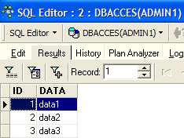 |
بدأنا بإصدار أمر COMMIT للتأكد من أننا نبدأ معاملة جديدة. ثم حذفنا السطر 4. لم يتم تثبيت المعاملة بعد.
ثم يبدأ ADMIN2 معاملة في محرر SQL الخاص به (ADMIN2):
 |  |
تُظهر الشاشة على اليمين أن ADMIN2 حاول تعديل السطر 4. وقد تم إعلامه بأن ذلك غير ممكن لأن شخصًا آخر قد عدّله بالفعل ولكنه لم يقم بتثبيت التغيير بعد.
لنعد إلى محرر SQL (ADMIN1) لتنفيذ الأمر COMMIT:
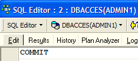
لنعد إلى محرر SQL (ADMIN2) لتشغيل الأمر UPDATE مرة أخرى:
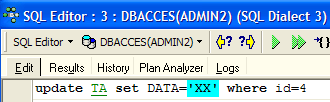 |  |
 |  |
تكتمل عملية UPDATE بنجاح على الرغم من أن الصف رقم 4 لم يعد موجودًا، كما يوضح ذلك جملة SELECT التالية. وفي هذه المرحلة يكتشف ADMIN2 أن الصف لم يعد موجودًا.
7.3.2.3. وضع القراءة القابلة للتكرار
دعونا الآن نوضح وضع "القراءة القابلة للتكرار". يتم توفير مستوى العزل هذا بواسطة وضع "اللقطة". وهو يضمن حصول المعاملة دائمًا على نفس النتيجة عند قراءة قاعدة البيانات.
لنبدأ بالعمل مع محرر SQL الخاص بـ ADMIN2:
 |  |  |
 |  |
الآن دعونا ننتقل إلى محرر SQL الخاص بـ ADMIN1:
 |  | 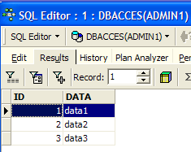 |
 | 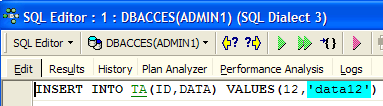 |  |
 |  |
قام المستخدم ADMIN1 بإضافة صفين وإتمام المعاملة. لنعد الآن إلى محرر SQL (ADMIN2) لإعادة تشغيل أمر SELECT SUM:
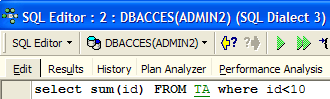 | 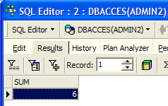 |
يمكننا أن نرى أن ADMIN2 لا يرى الصفوف التي أضافها ADMIN1، على الرغم من أنها تم تأكيدها باستخدام COMMIT. يعرض SELECT SUM نفس النتيجة التي كانت قبل الإضافات. هذا هو مبدأ القراءة القابلة للتكرار.
الآن، ونحن لا نزال في محرر SQL (ADMIN2)، دعونا نلتزم بالمعاملة باستخدام COMMIT ثم نجري SELECT SUM مرة أخرى:
 | 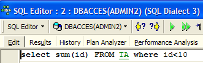 |  |
يتم الآن أخذ الصفوف التي أضافها ADMIN1 في الاعتبار.
7.3.3. وضع القراءة الملتزم بها
دعونا الآن نوضح وضع "القراءة الملتزم بها". يشبه مستوى العزل هذا مستوى اللقطة، باستثناء ما يتعلق بـ "القراءة القابلة للتكرار".
نبدأ بتغيير مستوى عزل المعاملة لكلا الاتصالين.
- نقوم بفصل المستخدمين، ADMIN1 و ADMIN2
- نقوم بتغيير مستوى عزل معاملاتهما

- نعيد توصيل المستخدمين ADMIN1 و ADMIN2
سنعود الآن إلى المثال السابق الذي أوضح "القراءة القابلة للتكرار" لإظهار أننا لم نعد نرى نفس السلوك. لنبدأ بالعمل مع محرر SQL الخاص بـ ADMIN2:
| | |
| |
الآن دعونا ننتقل إلى محرر SQL الخاص بـ ADMIN1:
| |
| |
| |
أضاف المستخدم ADMIN1 صفين وقام بتثبيت معاملته. لنعد الآن إلى محرر SQL (ADMIN2) لإعادة تشغيل SELECT SUM:
 |
لا تعرض SELECT SUM نفس النتيجة التي كانت قبل الإضافات التي أجراها ADMIN1. هذا هو الفرق بين وضعي اللقطة (snapshot) والقراءة الملتزم بها (read committed).